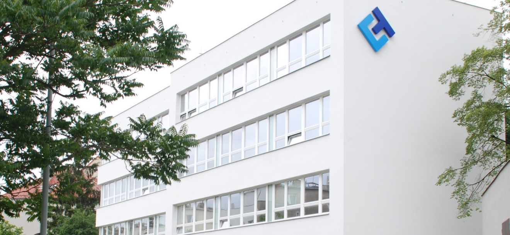

TC Business Innovation Hub zahajuje činnost
TC Business Innovation Hub (INNOHUB) zahajuje činnost jako specializované pracoviště Technologického centra Praha. TC INNOHUB propojuje podporu komercializace výzkumu, rozvoje technologických firem a přípravy inovačních projektů.
Zjisti víc
TC Business Innovation Hub (INNOHUB) navazuje na zkušenosti a partnerství dosavadního Oddělení rozvoje podnikání TC Praha. Pod společnou značkou propojuje odborné kapacity a programy, které pomáhají převádět výsledky výzkumu a technologické nápady do praxe.
Výzkumným týmům, startupům, spin-offům i zavedeným firmám nabízí podporu od posouzení aplikačního a tržního potenciálu přes hledání partnerů a financování až po přípravu pilotního ověření a obchodního modelu.
INNOHUB propojuje aktivity projektů TC Runway, ESA Technology Broker, ELIgnite, Cybersecurity Innovation Hub, ILO a Commercialization Reactor. Klienti tak mohou využít návaznou podporu napříč obory a fázemi rozvoje své inovace.
Kontaktujte nás